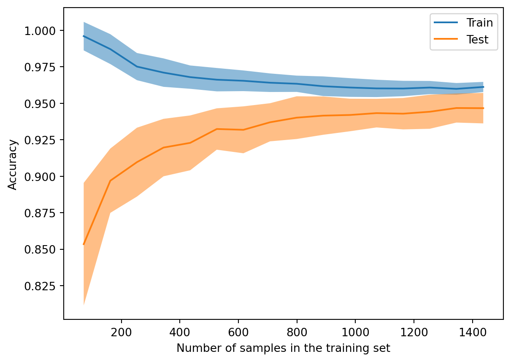

We have barely scratched the surface of the universe of classification algorithms. Even just the two types we have seen, nearest neighbors and decision trees, have multiple variations and options available through hyperparameters.
Definition 4.1 A hyperparameter of a learning algorithm is a value or setting affecting the algorithm that remains fixed throughout training.
Note
In ML, a parameter is a value that is adjusted during training; i.e., it is learned from the training data. In most of mathematics, we would refer to these as variables, but in ML that term is often understood to be synonymous with feature.
Some hyperparameters, such as the choice of norm in the nearest-neighbors algorithm, have an influence that is not easy to characterize. But others clearly affect the potential expressive power of the algorithm.
Example 4.1 The maximum depth \(r\) of a decision tree limits the complexity that the tree can attain. When \(r=1\), the tree can divide the data only once and assign different values to the different sides. In general, though, a tree can assign up to \(2^r\) unique values, which grows exponentially with \(r\); in fact, any training set of that size or smaller can be modeled with 100% training accuracy.
For a kNN classifier, when \(k\) is as large as the number of samples, the classifier can only take one value on the entire set—all the samples have a vote everywhere. The other extreme is \(k=1\), where each sample rules within its own neighborhood, and again we achieve 100% training accuracy.
Options provide flexibility but also demand rationales for their use. How can we choose the best hyperparameters for a given problem? And how do we choose the best algorithm overall? In order to answer these questions, we must first understand what to expect from the results of a learner in general terms.
4.1 Bias–variance tradeoff
When we train a classifier, we use a particular set of training data. In a different parallel universe, we might have been handed a different training set drawn from the same overall population. While we might be optimistic and hope for receiving the best-case training set, it’s more prudent to consider what happens in the average case.
4.1.1 Learner bias
Suppose that \(f(x)\) is a perfect labeller, i.e., a function with 100% accuracy over an entire population. For simplicity, we can imagine that \(f\) is a binary classifier, i.e., \(f(x) \in \{0,1\}\), although this assumption is not essential.
Let \(\hat{f}(x)\) denote a probabilistic classification function obtained after training. It depends on the particular training set we used. Suppose there are \(N\) total possible training sets, leading to labelling functions \[
\hat{f}_1(x),\hat{f}_2(x),\dots,\hat{f}_N(x).
\] Then we define the expected value of the classifier as the average over all training sets: \[
\E{\hat{f}(x)} = \frac{1}{N} \sum_{i=1}^N \hat{f_i}(x).
\]
Note
Except on toy problems, we don’t know how to calculate this average. This is more of a thought experiment. But we will simulate the idea later on.
The term expected doesn’t mean that we anticipate getting this answer for our particular \(\hat{f}\). It’s just what we would get if we could average over all parallel universes receiving unique training sets.
We can apply the expectation operator \(\mathbb{E}\) to any function of \(x\). In particular, the expected error in our own universe’s prediction is \[
\begin{split}
\E{f(x) - \hat{f}(x)} &= \frac{1}{N} \sum_{i=1}^N \left( f(x) - \hat{f_i}(x) \right) \\
&= \frac{1}{N} \left( \sum_{i=1}^N f(x) \right) - \frac{1}{N}\left( \sum_{i=1}^N \hat{f_i}(x) \right) \\
&= f(x) - \E{\hat{f}(x)}.
\end{split}
\] We will set \(y=f(x)\) as the true label and \(\hat{y}=\E{\hat{f}(x)}\) as the expected prediction. The quantity above, \(y-\hat{y}\), is called the bias of the classifier. Bias depends on the particular algorithm and its hyperparameters, but not on the training set. Among other things, bias accounts for the fact that any particular finite algorithm can represent only some labelling functions perfectly.
4.1.2 Variance
It might seem as though the only important goal is to minimize the bias. To see why this is not the case, imagine that you are playing a hole of golf where the green lies on an island at the end of the fairway. You’re capable of landing the ball on the green in one swing, but it’s near the upper end of your range, and the penalty for landing in the water instead is severe. You might be better off playing it safe by just approaching the water’s edge, which is a shot you can make much more reliably. On average over many attempts, you may well get a better score from the aggressive strategy, but the safe strategy gives you a more reliable result and better odds of doing pretty well, though not optimally.
In essence, a good chance of a mediocre result can outweigh a small chance of a better result. To express this tradeoff mathematically, we can compute the variance of the predicted label at any \(x\): \[
\begin{split}
\E{\bigl(y - \hat{f}(x)\bigr)^2} &= \frac{1}{N} \sum_{i=1}^N \left( y - \hat{f_i}(x) \right)^2 \\
&= \frac{1}{N} \sum_{i=1}^N \left( y - \hat{y} + \hat{y} - \hat{f_i}(x) \right)^2 \\
&= \frac{1}{N} \sum_{i=1}^N \left( y - \hat{y} \right)^2 + \frac{1}{N} \sum_{i=1}^N \left( \hat{y} - \hat{f}_i(x) \right)^2 \\
& \qquad + 2 \left( y - \hat{y} \right) \cdot \frac{1}{N}\sum_{i=1}^N \left( \hat{y} - \hat{f}_i(x) \right).
\end{split}
\]
Now we find something interesting: \[
\frac{1}{N} \sum_{i=1}^N \left( \hat{y} - \hat{f}_i(x) \right) =
\hat{y} - \frac{1}{N} \sum_{i=1}^N \hat{f}_i(x) = 0,
\] by the definition of \(\hat{y}\). So overall, \[
\begin{split}
\E{\bigl(y - \hat{f}(x)\bigr)^2} &= \frac{1}{N} \sum_{i=1}^N \left( y - \hat{y} \right)^2 + \frac{1}{N} \sum_{i=1}^N \left( \hat{y} - \hat{f}_i(x) \right)^2 \\
&= (y-\hat{y})^2 + \E{\left(\hat{y} - \hat{f}(x)\right)^2}
\end{split}
\tag{4.1}\] The first term is the squared bias. The second is the variance of the learning method. In words, the variance of the learning process has two contributions:
Bias
How close is the average prediction to the ground truth?
Variance
How close to the average prediction is any one prediction likely to be?
Code
rng = default_rng(302)x, y, bias, var = [], [], [], []x.extend(rng.normal(0.04,0.08,40))y.extend(rng.normal(-0.03,0.06,40))bias.extend(["low"]*40)var.extend(["low"]*40)x.extend(rng.normal(0.55,0.11,40))y.extend(rng.normal(-0.35,0.05,40))bias.extend(["high"]*40)var.extend(["low"]*40)x.extend(rng.normal(-0.02,0.34,40))y.extend(rng.normal(0.03,0.33,40))bias.extend(["low"]*40)var.extend(["high"]*40)x.extend(rng.normal(-0.25,0.33,40))y.extend(rng.normal(-0.35,0.33,40))bias.extend(["high"]*40)var.extend(["high"]*40)points = pd.DataFrame({"bias": bias, "variance": var, "x₁": x, "x₂": y})fig = sns.relplot(data=points, x="x₁", y="x₂", row="variance", col="bias", aspect=1, height=3);fig.set(xlim=(-1.25,1.25), ylim=(-1.25,1.25));
Figure 4.1: Bias versus variance (imagine you are aiming at the center of the box)
Why would these two factors be in opposition? When a learning method has the capacity to capture complex behavior, it potentially has a low bias. However, that same capacity means that the learner will fit itself very well to each individual training set, which increases the potential for variance over the whole collection of training sets.
This tension is known as the bias–variance tradeoff. Perhaps we can view this tradeoff as a special case of Occam’s Razor: it’s best to choose the least complex method necessary to reach a particular level of explanatory power.
4.1.3 Learning curves
We can illustrate the tradeoff between bias and variance by running an artificial experiment with different sizes for the training datasets.
Example 4.2 We will use a subset of a realistic data set used to predict the dominant type of tree in patches of forest. We train a decision tree classifier with fixed depth throughout. (Don’t confuse the forest data for the tree classifier, haha.)
forest = datasets.fetch_covtype()X = forest["data"][:250000,:8] # 250,000 samples, 8 dimensionsy = forest["target"][:250000]X_train, X_test, y_train, y_test = train_test_split( X, y, test_size=0.05, shuffle=True, random_state=0)alln =range(300, 6001, 300) # sizes of the training subsetsresults = [] # for tracking resultstree = DecisionTreeClassifier(max_depth=3) for n in alln: # iterate over training set sizesfor i inrange(100): # iterate over training sets X_train, y_train = shuffle(X_train, y_train, random_state=10*i) XX, yy = X_train[:n,:], y_train[:n] # training subset of size n tree.fit(XX, yy) results.append( ("train", n, 1-tree.score(XX, yy)) ) results.append( ("test", n, 1-tree.score(X_test, y_test)) )cols = [ "kind", "training set size", "error" ]results = pd.DataFrame(results, columns=cols)sns.relplot(data=results, x=cols[1], y=cols[2], kind="line", errorbar="sd", hue=cols[0]);

The plot above shows learning curves. The solid line is the mean result over all trials, and the ribbon has a width of one standard deviation. For each small training set, the tree has more than enough resolving power and adapts itself too well to the training data, leading to a large gap with the testing error (i.e., a failure to generalize past the training set). You can also see large variance (ribbon widths) in the results at the smaller sizes. As the training set size increases, we observe the training error increasing, because the task of reproducing the training set is now harder. The testing errors decrease, though, because the model has been fit to a more representative subset of the data. The gap between training and testing closes as more training data is used and the model is pushed to its limits.
Note that the curves seem to approach a horizontal asymptote at a nonzero level of error. This level indicates an unavoidable bias for this tree size, no matter how much of the data we throw at it. As a simple analogy, think about approximating curves in the plane by a parabola. You will be able to do a perfect job for linear and quadratic functions, but if you approximate one period of a cosine curve, you can’t do a great job no matter how much information you have.
When you see a large gap between training and test errors, you should suspect that the learner will not generalize well. Ideally, you could bring more data to the table, perhaps by artificially augmenting the training examples. If not, you might as well decrease the resolving power of your learner, because the excess power is likely to make things no better, and maybe worse.
4.2 Overfitting
One important factor we have not yet considered is noise in the training data—that is, erroneous values. If a learner responds too adeptly to isolated wrong values, it will also respond incorrectly to other nearby inputs. This situation is known as overfitting.
4.2.1 Overfitting in kNN
To illustrate overfitting, let’s use a really simple classification problem: a single feature, with the class being the sign of the feature’s value. (We arbitrarily assign zero to have class \(+1\).)
Consider first a kNN classifier with \(k=1\). The class assigned to each value is just that of the nearest training example, making for a piecewise constant labelling. Here are the results for four different training sets, each of size 40:
Figure 4.2: kNN with k=1 and perfect data
As you can see above, all four results are quite good. The only errors are for queries near zero.
Now suppose we use training sets that have just 3 mislabeled examples each. Here are some resulting classifiers:
Figure 4.3: kNN with k=1 and noisy data
Every sample is its own nearest neighbor, so this classifier responds to noisy data by reproducing it perfectly, which interferes with the larger trend we actually want to capture. We can generally expect such overfitting with \(k=1\), for which the deicision boundary can be complex.
Now let’s bump up to \(k=3\). The results are more like we want, even with noisy data:
Figure 4.4: kNN with k=3 and noisy data
The voting mechanism of kNN allows the classifier to ignore isolated bad examples. If we continue to \(k=7\), then the 3 outliers will never be able to outvote the correct values:
Figure 4.5: kNN with k=7 and noisy data
Caution
The lesson here is not simply that “bigger \(k\) is better.” In the case of \(k=21\) above, for example, the classifier will predict the same value everywhere, which we could describe as underfitting the data.
4.2.2 Overfitting in decision trees
As mentioned in Example 4.1, the depth of a decision tree correlates with its ability to divide the samples more finely. For \(n=40\) values, a tree of depth 6 is guaranteed to reproduce every sample value perfectly. Thus, with noisy data, we see clear signs of overfitting:
Figure 4.6: Decision tree with depth=6 and noisy data
Using a shallower tree reduces the extent of overfitting:
Figure 4.7: Decision tree with depth=3 and noisy data
We can eliminate the overfitting completely and get a single point as the decision boundary, although its location still might not be ideal:
Figure 4.8: Decision tree with depth=2 and noisy data
4.2.3 Overfitting and variance
The tendency to fit closely to training data also implies that the learner may have a good deal of variance in training (see Figure 4.3, and Figure 4.6, for example). Thus, overfitting is often associated with a large gap between training and testing variance, as observed in Section 4.1.
Example 4.3 Returning to the forest data from Example 4.2, we try decision trees of maximum depth \(r=12\) on 100 random training subsets of size 5000:
tree = DecisionTreeClassifier(max_depth=12)experiment(tree, X, y, 5000)
Figure 4.9: Results from an overfit decision tree
Since \(2^{12}=4096\), this tree is probably overfit to the training data, and we also see the wide separation between training and testing that suggests the training does not generalize well. With a depth of \(r=4\), the training and testing results completely overlap:
tree = DecisionTreeClassifier(max_depth=4)experiment(tree, X, y, 5000)
However, notice above that the testing error increased substantially from the overfit case.
We could say that the last tree in Example 4.3 is underfitting the data; the behavior of the labelling function is probably too complex to be replicated well by any tree that shallow. In short, the overfitting/underfitting dilemma is another manifestation of the bias–variance tradeoff.
4.3 Ensemble methods
When a relatively expressive learning model is used, overfitting and strong dependence on the training set are possible. One meta-strategy for reducing training variance without decreasing the model expressiveness is to use an ensemble method. The idea of an ensemble is that averaging over many different training sets will reduce the variance that comes from overfitting. It’s a way to simulate the computation of expected values.
Definition 4.2 In bootstrap aggregation, or bagging for short, samples are drawn randomly from the original training set. Usually, this is done with replacement, which means that some samples might be selected multiple times.
Why should bagging work? It comes down to the way that bias and variance behave. Suppose we produce \(M\) prbabilstic binary classifiers, \(\hat{f}_1,\ldots,\hat{f}_M\), that are identical except in having received independent training sets. They create the (probabilistic) bagging classifier
\[
\hat{F}(x) = \frac{1}{M} \sum_{m=1}^M \hat{f}_m(x).
\] The bias of the bagging classifier is the expectation of \[
y - \hat{F}(x) = \frac{1}{M} (My) - \frac{1}{M} \sum_{m=1}^M \hat{f}_m(x) = \frac{1}{M} \sum_{m=1}^M \left( y - \hat{f}_m(x) \right).
\] This is simply the mean of the constitutent classifier biases. Since the original classifiers are identical, in expected value they all have the same bias, and we conclude that the bagging classifier has the same expected bias as its constituents.
The story for the variance is different. It can be derived that the variance of the bagging predictor is \(1/M\) times that of the constituent classifiers. (This effect can be used to explain the wisdom of crowds. If each person in a classroom is asked to guess the number of jellybeans in a large jar, the mean of the class’ guesses will tend to be much closer to the true value than most individuals’ guesses are.)
We should expect bagging to work best with highly expressive classifiers that have low bias and large variance. These tend to occur in large-depth decision trees and small-\(k\) kNN classifiers.
Scikit-learn has a BaggingClassifier that automates the process of generating an ensemble from just one basic type of estimator.
Example 4.4 Here is a dataset collected from images of dried beans:
In a Jupyter environment, please rerun this cell to show the HTML representation or trust the notebook. On GitHub, the HTML representation is unable to render, please try loading this page with nbviewer.org.
We can use the trained ensemble object much like any learner. For example, here is the prediction obtained for the last row of the training set:
query = X_test.iloc[-1:,:]p_hat = ensemble.predict_proba(query)print(f"Predicted ensemble probability of True on query is {p_hat[0][1]:.2%}")
Predicted ensemble probability of True on query is 52.67%
Internally, the estimators_ field of the ensemble object is a list of the individual trained classifiers. With a little work, we could find out the prediction for True from every constituent:
pm = [ model.predict_proba(query.to_numpy())[0,1] for model in ensemble.estimators_ ]pm[:6] # first 6 predictions
The ensemble takes the average of this list to create its prediction:
print(f"Mean probability of True for query is {np.mean(pm):.2%}")
Mean probability of True for query is 52.67%
The result above matches what we got by predicting directly from the ensemble, which is the normal mode of operation.
Over the testing set, we find that the ensemble has improved the AUC score:
p_hat = ensemble.predict_proba(X_test)auc = roc_auc_score(y_test==True, p_hat[:,1]) # columns are for [False, True]print(f"AUC for ensemble is {auc:.4f}")
AUC for ensemble is 0.9839
There is a significant catch in that the theory requires the constituent learners to be uncorrelated, which is less true as the size of the bagging sample grows relative to the original training set. This can somewhat counterintuitively lead to better results by training on smaller individual training sets.
Note
An ensemble of decision trees is known as a random forest. We can use a RandomForestClassifier to accomplish the same thing as a bagged decision tree ensemble.
Example 4.5 If we repeat the above but reduce the bagging training sets to just 20% of the full training set, we get a slightly better result:
ensemble = BaggingClassifier( pipe, max_samples=0.2, n_estimators=100, random_state=18621 )ensemble.fit(X_train, y_train)p_hat = ensemble.predict_proba(X_test)auc = roc_auc_score(y_test==True, p_hat[:,1]) # columns are for [False, True]print(f"AUC for the new ensemble is {auc:.4f}")
AUC for the new ensemble is 0.9873
We may get better results by increasing the size of the ensemble, too, though in this case there isn’t much room left for improvement.
Example 4.6 Let’s work again with the forest cover dataset. It’s got over 500,000 samples and 54 features:
We’ll turn this into a binary classification by looking for just one of the possible label values:
X = forest["data"]y = forest["target"] ==1X_train, X_test, y_train, y_test = train_test_split( X, y, test_size=0.2, shuffle=True, random_state=302)
How should we best make use of all that data? We can use a fairly deep decision tree without fear of overfitting, and the result is not bad:
tree = DecisionTreeClassifier(max_depth=12) tree.fit(X_train, y_train)from sklearn.metrics import f1_scoreF1 = f1_score(y_test, tree.predict(X_test) )print(f"F₁ for a single tree is {F1:.4f}")
F₁ for a single tree is 0.8107
A simple averaging over the same type of tree actually does worse here:
from sklearn.ensemble import RandomForestClassifierrf = RandomForestClassifier( max_depth=12, max_samples=0.2, n_estimators=100, n_jobs=-1 )rf.fit(X_train,y_train)F1 = f1_score(y_test, rf.predict(X_test) )print(f"F₁ for a random forest is {F1:.4f}")
F₁ for a random forest is 0.7787
It’s possible that these trees are too correlated. We can combat that by exaggerating their degree of overfitting:
rf = RandomForestClassifier( max_depth=24, max_samples=0.2, n_estimators=100, n_jobs=-1 )rf.fit(X_train,y_train)F1 = f1_score(y_test, rf.predict(X_test) )print(f"F₁ for a taller forest is {F1:.4f}")
F₁ for a taller forest is 0.9019
In fact, we can decorrelate even better by only using random subsets of the features on each tree. Here, for example, we construct the ensemble so that each tree randomly selects 50% of the original 54 dimensions to work with:
rf = RandomForestClassifier( max_depth=24, max_features=0.5, max_samples=0.2, n_estimators=100, n_jobs=-1 )rf.fit(X_train,y_train)F1 = f1_score(y_test, rf.predict(X_test) )print(f"F₁ for a taller, skinnier forest is {F1:.4f}")
F₁ for a taller, skinnier forest is 0.9413
Ensembles can be constructed for any individual model type. Their chief disadvantage is the need to repeat the fitting process multiple times, although this can be mitigated by computing the fits in parallel. For random forests in particular, we also lose the ability to interpret the decision process the way we can for an individual tree.
4.4 Validation
We now return to the opening questions of this chapter: how should we determine optimal hyperparameters and algorithms?
It’s tempting to compute some test scores over a range of hyperparameter choices and simply choose the case that scores best. However, if we base hyperparameter optimization on a fixed testing set, then we are effectively learning from that set! The hyperparameters might become too tuned—i.e., overfit—to our particular choice of the test set.
To avoid this pitfall, we can split the data into three subsets for training, validation, and testing. The validation set is used to tune hyperparameters. Once training is performed at values determined to be best on validation, the test set is used to assess the generalization of the optimized learner.
Unfortunately, a fixed three-way split of the data further reduces the amount of data available for training, so we often turn to an alternative.
4.4.1 Cross-validation
In cross-validation, each learner is trained multiple times using unique training and validation sets drawn from the same pool.
Definition 4.3 The steps for \(k\)-fold cross-validation are as follows:
Divide the original data into training and testing sets.
Further divide the training data set into \(k\) roughly equal parts called folds.
Train a learner using folds \(2,3,\ldots,k\) and validate on the cases in fold 1. Then train another learner on folds \(1,3,\ldots,k\) and validate against the cases in fold 2. Continue until each fold has served once for validation.
Select the hyperparameters producing the best validation score and retrain on the entire training set.
Assess performance using the test set.
A different variation is stratified\(k\)-fold, in which the division in step 2 is constrained so that the relative membership of each class is the same in every fold as it is in the full training set. This is advisable when one or more classes is scarce and might otherwise become underrepresented in some folds.
Example 4.7 Here is how 16 elements can be split into 4 folds:
from sklearn.model_selection import KFoldkf = KFold(n_splits=4, shuffle=True, random_state=0)for train,test in kf.split(range(16)): print("train:", train, ", test:", test)
The low variance across the folds that we see above is reassurance that they are representative. Conversely, if the scores were spread more widely, we would be concerned that there was strong dependence on the training set, which might indicate overfitting.
4.4.2 Hyperparameter tuning
If we perform cross-validations as we vary a hyperparameter, we get a validation curve.
Example 4.9 Here is a validation curve for the maximum depth of a decision tree classifier on the beans data:
from sklearn.model_selection import StratifiedKFolddepths =range(4, 16, 1)kf = StratifiedKFold(n_splits=8, shuffle=True, random_state=2)results = [] # for keeping resultsfor d in depths: tree = DecisionTreeClassifier(max_depth=d, random_state=1) cv = cross_validate(tree, X_train, y_train, cv=kf, scoring="balanced_accuracy", n_jobs=-1 )for err in1- cv["test_score"]: results.append( (d, err) )results = pd.DataFrame(results, columns=["depth", "error"] )sns.relplot(data=results, x="depth", y="error", kind="line", errorbar="sd" );
Initially the error decreases because the shallowest decision trees are underfit. The minimum error is at max depth 9, after which overfitting seems to take over:
results.groupby("depth").mean()
error
depth
4
0.206700
5
0.118655
6
0.097290
7
0.092586
8
0.088454
9
0.083948
10
0.082687
11
0.084315
12
0.085555
13
0.087055
14
0.087295
15
0.086693
We can now train this optimal classifier on the entire training set and measure performance on the reserved testing data:
When there is a single hyperparameter in play, the validation curve is useful way to optimize it. When multiple hyperparameters are available, it’s common to perform a grid search, in which we try cross-validated fitting using every specified combination of parameter values.
Example 4.10 Let’s work with a dataset on breast cancer detection:
Best parameters:
{'kneighborsclassifier__metric': 'manhattan', 'kneighborsclassifier__n_neighbors': 4, 'kneighborsclassifier__weights': 'distance'}
Best score:
0.9734627184207015
Each fitted grid search object is itself a classifier that was trained on the full training set at the optimal hyperparameters:
dt_score = f1_score( y_test, grid_dt.predict(X_test) )knn_score = f1_score( y_test, grid_knn.predict(X_test) )print(f"best tree f1 score: {dt_score:.5f}")print(f"best knn f1 score: {knn_score:.5f}")
best tree f1 score: 0.94915
best knn f1 score: 0.99187
Note
It may be instructive to rerun the competition above using different random seeds. The meaningfulness of the results is limited by their sensitivity to such choices. Don’t let floating-point values give you a false feeling of precision!
4.4.2.2 Alternatives to grid search
Grid search is a brute-force approach. It is embarrassingly parallel, meaning that different processors can work on different locations on the grid at the same time. But it is usually too slow for large training sets, or when the search space has more than two or three dimensions. In such cases you can try searching over crude versions of the grid, perhaps with just part of the training data, and gradually narrow the search while using all the data. When desperate, one may try a randomized search and to guide the process with experience and intuition.